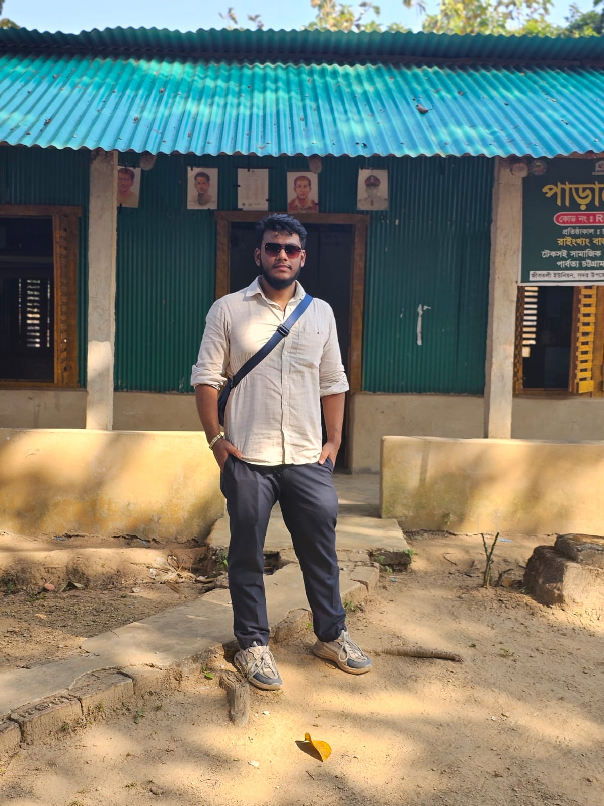
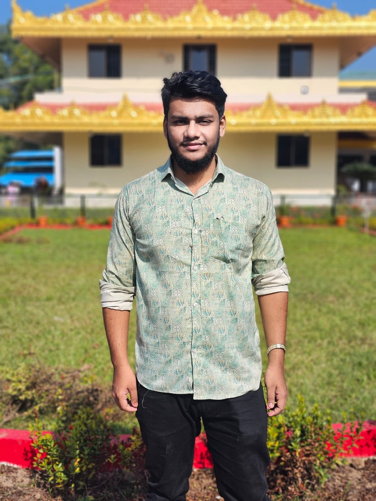

Sajek Valley
Clouds, hills, and calm — a perfect escape into nature.

Why I Loved This Place
Sajek Valley was one of the most beautiful places I have visited in Bangladesh. The hill roads, the fresh air, and the clouds moving across the mountains made it feel like a completely different world. Early mornings were the best — the view was quiet, cool, and unforgettable.
Top 5 Things To Do
- Wake up early to watch the cloud view from the viewpoint.
- Explore nearby hills and small trails (safely).
- Try local hill foods and tea from local shops.
- Take scenic photos during sunrise and golden hour.
- Enjoy peaceful night time — cool weather and quiet surroundings.
Quick Travel Info
| Best Season | October to March (clear views, less rain) |
|---|---|
| Budget | Medium (transport + stay can increase in peak season) |
| Transport | Khagrachhari route; then local transport to Sajek |
| Food | Local hill meals, snacks, tea/coffee |
Photo Moments

All photos are from my own trip.